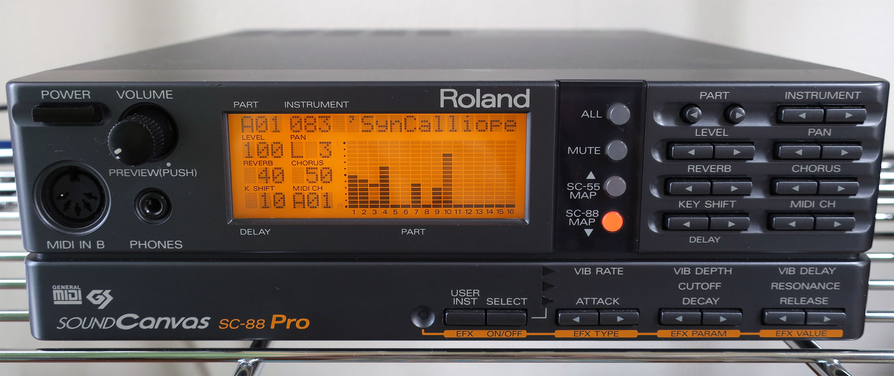
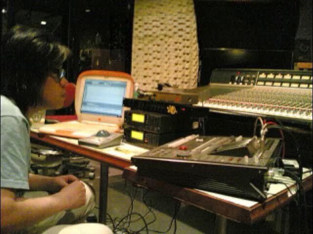
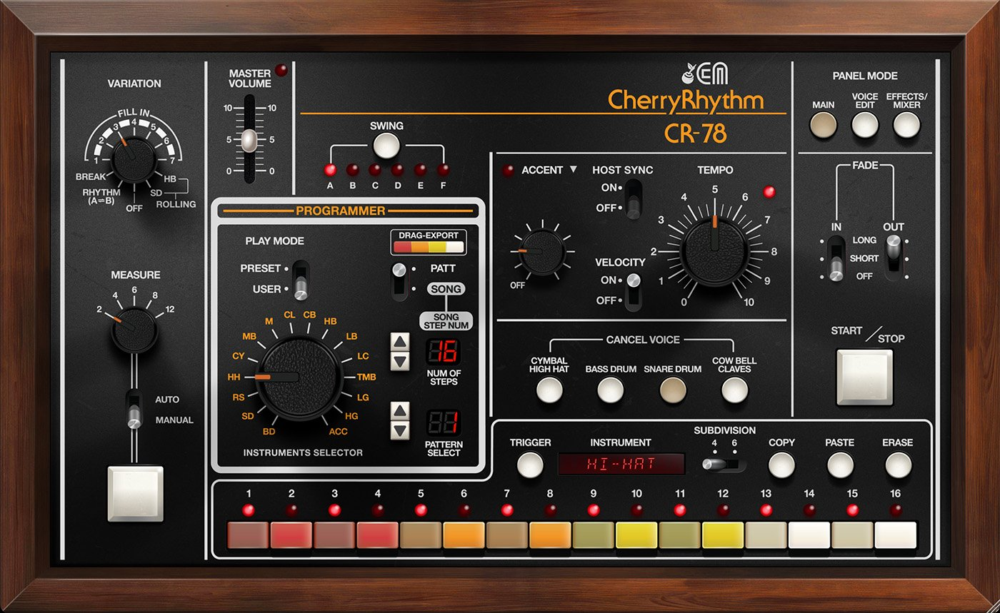

Main Gear
Rei Harakami was famous for using the Roland SC-88 Pro. People thought that he used expensive computers, but he usually used the same gear and sounds for his songs but would just manipulate them in different ways.

The SC-88 Pro he used for his tracks.
Developing His Sound
Rei Harakami mostly used the SC-88 Pro for his songs. He would take a few sounds from the module and manipulate them into something completly new and unique. He would use the E.Piano 1 preset and add things like Chorus, Delay, Vibrato, And Reverb for his signature sound. He also used presets such as Wurly, Gamlang Gong, and Tekno Bass. This showed the world that you didn't need a big studio or expensive gear to make fresh and unique sounds.

Rei Harakami with his equipment.
Drums and Rhythms
He also liked using classic drum sounds like the Roland CR-78. He would use polyrhyms and offbeat rhythms to make his percussion more dynamic. Delay is also a big part of his signature drum sound, and his Delayed crash cymbal was like his version of Phrarell Williams signature triple beat stop.
